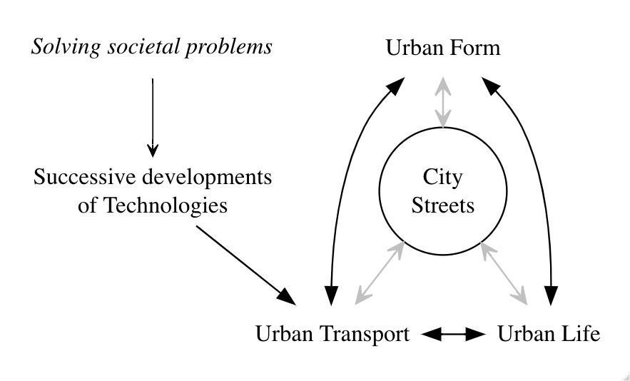
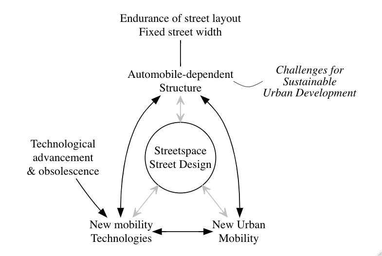

Urban data scientist, city designer, planner, architect and innovator
I see myself in the face of the challenge of making better cities as both ‘urban design researcher’ and ‘data scientist’. As an urban design researcher, I look for basic rules about how city systems work and relate to each other, which can direct us to understand cities as structures of organised complexity, constantly evolving and adapting. As a data scientist, I discover key information from complex data, using urban analytics tools.
Education
| University College London | PhD in Advanced Spatial Analysis | 09.2016 - 05.2021 |
| London School of Economics and Political Science | MSc in City Design and Social Science | 09.2011 - 10.2012 |
| P. Universidad Catolica de Chile | Title of Architect - Licentiate in Architecture | 03.1997 - 01.2004 |
Experience
selected roles, see 2 pages CV here
| University College London | Associate Lecturer (Teaching) in Spatial Data Science. | 05.2021 - present |
| Research Fellow | 12.2020 - 05.2021 | |
| Doctoral Resarcher | 09.2016 - 12.2020 | |
| LSE Cities | Researcher | 12.2011 - 10.2012 |
| The Comptroller General of the Republic of Chile | Designer and Analyst | 10.2009 - 08.2016 |
| Ministry of Housing and Planning | Project Manager & Designer | 08.2006 - 08.2007 |
Research Findings/Interests
My PhD dissertation “Rethinking Streets: a study of streetspace allocation metrics and street networks in London” argues that streetspace allocation is a key parameter of street design and provides both a methodology for streetspace allocation analysis citywide, and quantitative evidence that confirm the predominance of space allocated for vehicular transport over pedestrian uses in a case study of London. The fine-grain physical metrics analysed, not only can be useful to tackle a wide range of contemporary street related questions from urban environmental quality to the adoption of new technologies but also offer alternative analytical methods for street research, planning and design.
“From different perspectives, streets are considered fundamental components of urban form, urban transport and urban life. As is typically the case of complex systems like cities, these urban factors are varying simultaneously and interconnected as a functioning city system. The understanding of each of these factors in isolation would only provide a partial picture of the workings of the street system, so the challenge is in reviewing how they are combined together. A fourth factor of relevance to understanding streets and streetspace, which keeps this relationship evolving, is the development of new technologies that often influence urban transportation first but can have lasting effects on the other factors” (p 14).
“There is a general agreement among scholars that streets are an important determinant of the functioning of urban systems. Nevertheless, streets take this relevant condition not only by historical evolution but most importantly by design. Given the explosive post-industrial global urbanisation it can be conjectured that most streets of today were designed and built following functionalist principles of traffic movement efficiency that profoundly impacted the shape and vitality of cities, which has been termed a disurban legacy. It could be argued, however, that these principles no longer seem to fit with current urban mobility systems and urban quality of life aspirations. Moreover, they are largely contrary to sustainable urban development. An important design problem arises from the inherited conditions that shaped not only the physical organisation of streets but also the spatial configuration of street systems. The design constraints are defined by both the endurance of street layouts, due to the rigidity of land ownership structures, and by the establishment of land-use patterns based on automobile-dependency. All things considered, streetspace allocation turns out to be a crucial factor for street adaptation to new urban functions that result from the development of new technologies affecting urban mobility in particular” (p 59)1.

Footnotes
Palominos, N (2021) Rethinking Streets: a study of streetspace allocation metrics and street networks in London, Doctoral thesis, UCL (University College London). Doctoral. UCL (University College London). Available at: https://discovery.ucl.ac.uk/id/eprint/10127358/.↩︎